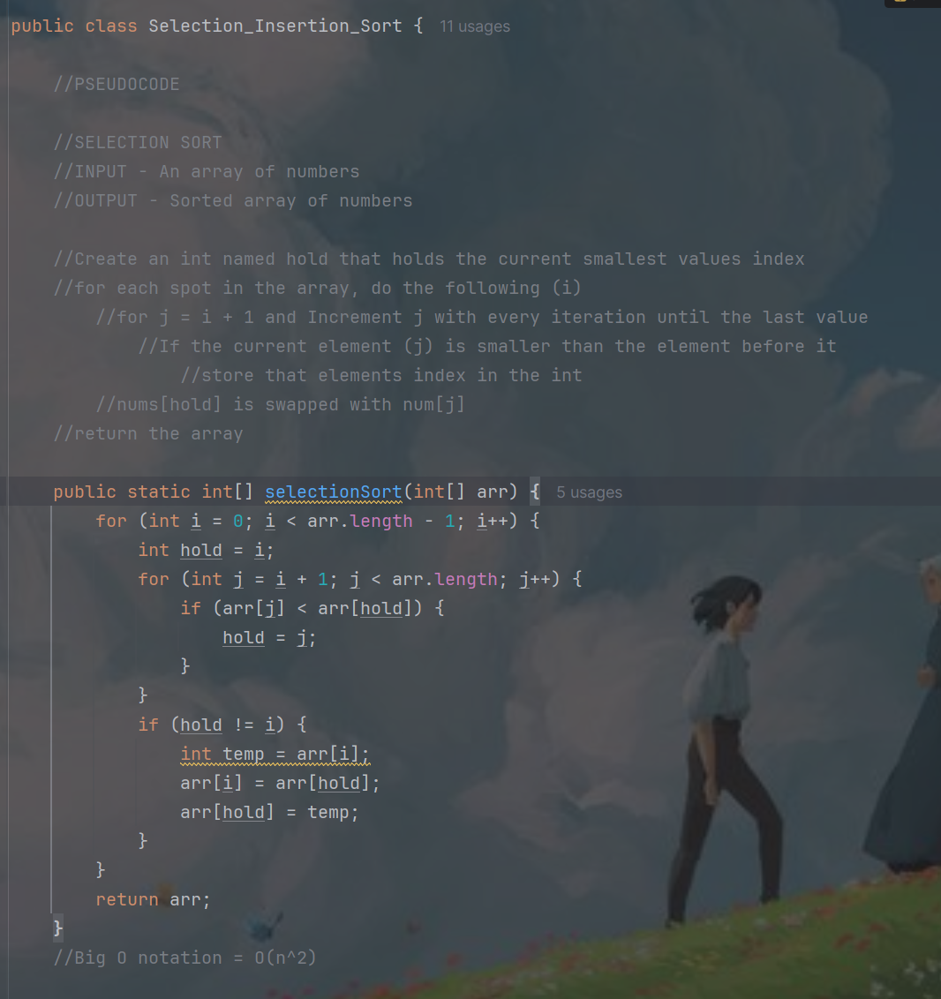
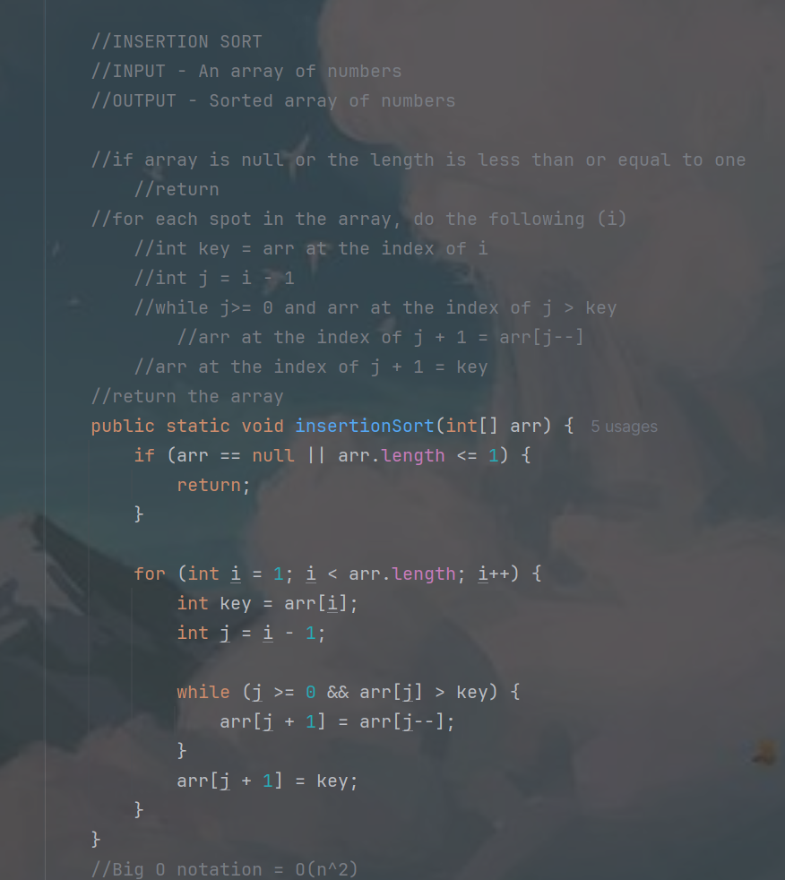

This first image is the pseudocode and code of a selection sort that I made in my 3rd quarter her at neumont. It will sort A list of random numbers by finding the minimum element and swapping its location with the number at the begginning of the unsorted section

The second image is also the pseudocode and code of an algorithm that I made in my 3rd quarter. This time however it is for a insertion sort. It also sorts a list of random numbers except the process is a little different and it has a different big O(n). This type of sorting is often attributed to sorting a deck of cards, sorted cards and the unsorted cards.

CSC150 Final
This image is just a few of the methods that together create a battle simulation game in the console.